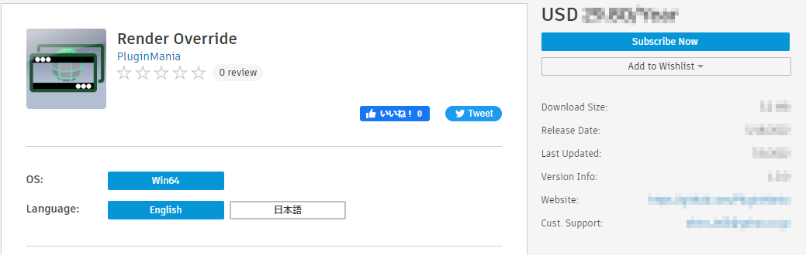
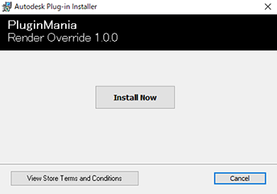

プラグインのダウンロード・インストール¶
このページの目次:
プラグインのダウンロード・インストール方法¶
AutodeskAppStoreからインストーラーをダウンロードしてください
支払方法を選択し、「Free 30-Day Trial(30日間体験版)」ボタンからアクティベーションすると、最初の30日間は料金の引き落としなしで使用することができます。
ダウンロードしたインストーラーを起動します
インストーラーの指示に従い、インストールを行います
インストールが完了したら、インストーラーを閉じます
注意事項¶
AutodeskAppStoreからインストーラーをダウンロードしてください
AutodeskAppStore以外での配布は行っておりません
メンテナンスなどでAutodeskAppStoreが利用できない場合は、復旧するまでお待ちください
Note
トラブルが発生した時は「 バグ報告・新機能の提案など 」からご報告をお願いします